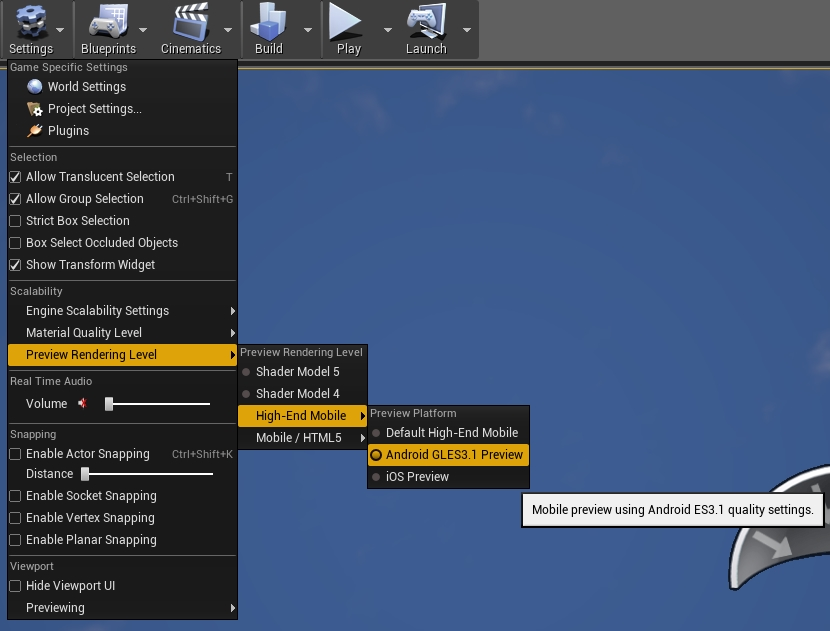

UnrealEngineNote
Table of Contents
- Editor
- Engine Features
- Unreal Engine Basics
- Systems and Features
- Rendering and Graphics
- Skeletal Mesh Animation System
- Performance and Profiling
- Paper2D
- Programming Guide
- 源码编译
- Getting Started
- Development Setup
- Unreal Engine Architecture
- Gameplay Architecture
- Gameplay Guides
- System Guides
- Automated Builds
- Asset Handling Reference Guides
- GameplayGuide
- Samples and Tutorials
- Platform Development
- Tutorial
- 开发经验积累
UnrealEngine note.
<!– more –>
Editor
基本操作
- 视角定位到物体
选中物体，按 F 按键 - 物体三围修改
选中物体
按 W 修改 transform
按 E 修改 Rotation
按 R 修改 Scale - 视角绕物体旋转
按住 Alt 键，按住鼠标左键，移动鼠标 - 视角 ZoomIn ZoomOut
按住 Alt 键，按住鼠标右键，移动鼠标 - 平移摄像机
按住鼠标中间键，移动鼠标 - 显示鼠标指针
按 Shift+F1 在运行模式下显示鼠标指针 - 物体和视角对齐
在 Outline 窗口，右键点击物体，选择 Align to View 选项
Blueprint
快捷创建节点
创建节点的快捷键基本上都是，长按某个键，然后在 Blueprint 中点击鼠标左键
| 节点 | 快捷方式 |
|---|---|
| Branch | 长按 b |
| ForEachLoop | 长按 f |
| Sequence | 长按 s |
| Comment | 按 c,不需要再 Blueprint 中点击左键 |
添加变量 get 节点
按住 Ctrl 拖动变量到 blueprint, 添加变量 get 节点
添加变量 set 节点
按住 Alt 拖动变量到 blueprint, 添加变量 set 节点
快捷定义变量
从别处粘贴函数到新的蓝图函数中，如果对应变量不存在，可以右击该变量节点，选择 create variable xxxx 定义类成员变量；或者选择 create local variable xxxx 定义函数局部变量。
快捷定义函数参数 和 函数返回值参数
- 定义函数输入参数 从匹配的函数参数 拉线 到 当前函数的输入参数节点，会自动定义输入参数。
- 定义函数返回值参数 从匹配的变量 拉线 到 当前函数的返回值参数节点，会自动定义返回值参数。
修改函数参数后，函数调用节点不刷新
- 右键点击函数调用节点 选择 Refresh Nodes 手动刷新
快捷删除连线
长按 Alt 键，点击要删除的连线。
Level Editor
如何设置关卡编辑器默认预览的渲染等级
在关卡编辑器中，Setting 菜单中进行设置。如下图所示：

Material Blueprint
快捷创建 Blueprint 节点
创建节点
创建节点的快捷键基本上都是，长按某个键，然后在 Blueprint 中点击鼠标左键
| 节点 | 快捷方式 |
|---|---|
| 1 维常量 | 长按 1 |
| 2 维常量 | 长按 2 |
| 3 维常量 | 长按 3 |
| 4 维常量 | 长按 4 |
| Add | 长按 a |
| Multiply | 长按 m |
| TextureSample | 长按 m |
| TexCoord | 长按 u |
常量节点和参数类型节点的互相转化
右键点击常量节点 执行 Convert to Parameter
右键点击参数类型节点 执行 Convert to Constant
Q&A
如何删除一个指定的 C++类？
为了从你的项目中删除一个 C++类，请遵循以下步骤：
- 关闭 Visual Studio
- 关闭 UE4 编辑器
- 在文件管理器（explorer）中从你的硬盘移除相应的.cpp 和.h 文件
- 移除 Binaries 文件夹中的所有内容
- 右键点击.uproject 文件然后点击生成 Visual Studio 项目文件（Generate Visual Studio Project Files）
- 返回到你的正常工作中
如果一个错误信息弹出，告诉你要在启动 UE4 编辑器的时候重新编译项目，点击“是”。
Engine Features
Unreal Engine Basics
Directory Structure
Game Project Directories
对于游戏项目来说，只需要上传 Config Content Source 三个目录
| Directory | Description |
|---|---|
| Binaries | 包含执行文件或其他编译阶段创建的文件 |
| Config | 游戏项目的默认配置 |
| Content | 包含游戏或引擎的内容，资源包或者地图 |
| External dependencies | 显示引擎的公共头文件，只在 VisualStudio 中显示 |
| Intermediate | 由 UnrealBuildTool 生成的文件。这些文件可以被删除后，重新构建 |
| Saved | 包含引擎生成的文件，如配置文件或日志文件。这些文件可以被删除后，重新构建 |
| Source | 包含游戏模块对象类文件 |
| Classes 包含游戏对象类定义 (.h 文件) | |
| Private 包含私有的游戏对象类的实现 (.cpp 文件) | |
| Public 包含公共的游戏对象类的实现 (.cpp 文件) |
Collaboration in Unreal Engine 4
Source Control https://docs.unrealengine.com/latest/INT/Engine/UI/SourceControl/index.html
Collaboration in Unreal Engine 4 https://docs.unrealengine.com/latest/INT/Engine/Basics/SourceControl/index.html
Source Control Inside Unreal Editor https://docs.unrealengine.com/latest/INT/Engine/Basics/SourceControl/InEditor/index.html
Systems and Features
Rendering and Graphics
Rendering Overview
虚幻 4 的渲染系统是全新的。DirectX11 管线包含延迟渲染，全局光照，带光照的半透明物体，后期处理，以及利用矢量场的 GPU 离子模拟
Deferred Shading 延迟着色
在虚幻 4 中，所有光照都是延迟应用的，相对地在虚幻 3 中使用的是正向光照路径。材质将它们的属性写入 GBuffers 中，在光照阶段，读取每个像素的材质属性并使用它们来执行光照计算。
Lighting Paths 光照路径
在 UE4 中有三种光照路径：
- Fully dynamic
- Partially static
- Fully static
这些在质量、性能以及游戏中可变性方面有不同的权衡。游戏根据自身需求选择最合适的。
Lit Translucency 带光照的半透明
半透明的光照和渲染是在一个单独的正向阶段进行的，从而可以保证和其他半透明正确的混合，这在多个阶段的光照技术中无法实现。
半透明物体可以在固体世界或者自身或者其他半透明物体上投射出阴影。
Sub-Surface Shading 子表面渲染
材质包含了新的渲染模型 MLM_Subsurface，该模型用于蜡烛或翡翠等表现为固体，但是光照在内部会散射。这种渲染模型比皮肤渲染质量要低，性能要求也低。
GPU Particles GPU 粒子
UE4 支持在 GPU 上模拟粒子。传统的 CPU 系统支持每帧渲染数千个粒子。GPU 模拟支持数十万个粒子。
后期特效
- 环境遮挡
- 环境立方体贴图
- 光溢出（泛光）Bloom
当裸眼看非常亮的物体并且它的背景比较暗时，会看到泛光现象。其产生的原因是，光在视网膜上或者在电影胶片上或者相机前面乳白色玻璃滤镜上的散射。
- 泛光遮罩 Bloom Dirt Mask
- 眼睛适应 Eye Adaptation(Automatic Exposure)
控制场景曝光自动调节，来再现人眼在明亮和黑暗环境下切换时的效果。
勾选 Project Settings/Rendering/Default Settings/Auto Exposure 选项来开启关闭该功能。
- 镜头光晕 Lens Flare
- 色调映射 Tone Mapping
色调映射可以平移和修改被渲染场景的颜色，从而改变最终结果。
- Vignette
随着距离视口中心越远，被渲染场景的亮度越低。
Materials
材质是一种资源，它可以被应用于网格来控制场景视觉上看到的样子。从高层次上来看，可以将材质设当作应用到物体上的“绘画”。但是这样也会有一些误解，因为材质定义的是组成该物体所用的表面类型。
用更专业的术语来说，材质用来计算光和表面如何交互。
Essential Material Concepts
材质是决定物体和关卡表现的决定因素之一。这部分文档的作用是以快速和高层次的方法来创建自己的材质。
- Material Expression Nodes and Networks
材质不是通过代码来创建的，而是在材质编辑器中用可视化脚本节点（被称为材质表达式）的网络来创建的。每个节点包含一段 HLSL 代码，来执行一个特殊的任务。创建材质其实就是通过可视化脚本来创建 HLSL 代码。
- Working with Colors and Numbers
- Textures
贴图是材质的组件，而不是最终的结果。
创建好贴图并将其导入 Unreal 编辑器后，就可以通过特殊的材质表达式节点（例如，Texture Sample 节点）将贴图引入材质中。
- Properties and Inputs
- Applying Materials to Surface
对于不同类型的表面，应用材质的方式有些许变化
Material Editor
菜单 Window / HLSL Code 可以显示材质编辑器对应的 HLSL 代码。
Material Inputs
- Inputs and Material Settings
对于每种类型的材质，并非所有的输入都是有用的。例如，在开发一个光照函数时（应用于光的材质）你只能在该材质上使用 Emissive Color 输入，因为其他的输入（例如，金属度，粗燥度）是不可应用的。
下面是三类可控制的主要属性：
- BlendMode 主要控制如何和后面的像素混合
- Shading Model 主要定义如何计算应用该材质的表面的光照
- Material Domain 主要控制材质的应用领域。例如，材质是否是表面的一部分，或者是一个光照函数，或者是一个后期处理材质。
- BlendMode 主要控制如何和后面的像素混合
- Base Color
Base Color 定义材质的整体颜色。
- Metallic
Metallic 定义表面像金属的程度。其取值范围为[0,1]，0 表示非金属，1 表示金属。当创建混合表面时，需要用到 0-1 之间的值，例如：腐蚀的金属、生锈的金属、有污垢的金属等。
- Specular
大多数情况下，Specular 保持 0.5 默认值即可。
Specular 取值范围为[0,1]，用于缩放非金属表面的高光总量。该输入参数对于金属表面无作用。
- Roughness
Roughness 控制材质的粗燥度。粗燥的材质比光滑的材质分散反射光到跟多的方向。该参数影响反射是否模糊或者尖锐，高光点是否宽泛或集中。
0 表示镜面反射，1 表示完全的漫反射
- Emissive Color
Emissive Color 控制材质的哪些部分因为发射线而光亮。理论上该输入参数应该接收到一个遮罩贴图，除了发热的区域，其大部分为黑色。
- Opacity 不透明度
当使用 Translucent Blend Mode 时，会使用 Opacity 输入参数。其取值范围为[0,1]，0 表示完全透明，1 表示完全不透明。
- Opacity Mask
当使用 Masked Blend Mode 时，才可以使用 Opacity Mask 输入参数。在遮罩模式下，材质要么全部透明，要么完全不透明，没有中间情况。这对于定义复杂的固体表面非常有用，例如锁链围墙，线网等。不透明部分依然会执行光照。
- Normal
Normal 输入参数，接受一张法线贴图，其为表面的每个像素提供了重要的物理细节。
- World Position Offset
World Position Offset 允许在世界空间中，对网格的顶点进行操作。这对于物体移动、变形、旋转等其他效果非常有用。这对于环境动画非常有用。
- World Displacement & Tessellation Multiplier
World Displacement 和 World Position Offset 很像，只是 World Displacement 使用 Tessellation 顶点而不是网格的基础顶点。将材质的 Tessellation 属性设置为非 None，才可以使用该输入。
Tessellation Multiplier 控制表面细分曲面的总量。需要时，可以加入更多的细节。将材质的 Tessellation 属性设置为非 None，才可以使用该输入。
- Subsurface Color
当 Shading Model 属性设置为 Subsurface 时，该输入参数才可用。该输入参数用来模拟光进入表面后，颜色的变化。例如，人类角色的皮肤有红色的子表面颜色，来模拟皮肤下的血液。
- Ambient Occlusion
环境遮蔽用于模拟发生在表面缝隙处的自阴影。通常该输入参数和一张 AO 贴图映射相连。
- Refraction 折射
Refraction 输入接收一张贴图或者一个值，来模拟表面的折射率。这对于玻璃、水等物质很有用，它们折射进入其中的光。
物质类型 折射率 空气 1.0 水 1.33 冰 1.31 玻璃 1.52 钻石 2.42 - Clear Coat (透明图层)
Clear Coat 着色模型用于更好地模拟多层材质，这种材质表面有有一层很薄的透明层。此外，Clear Coat 着色模型既可以用于金属表面，也可用于非金属表面。事实上，这种着色模型专门用于模拟覆盖在无色金属上的二级平滑颜色的薄膜。
Clear Coat 材质的例子包括丙烯酸或漆的透明图层，以及金属上的颜色薄膜如易拉罐或车漆。
Clear Coat 着色模型在主材质节点上开启了两个新的输入参数。
- Clear Coat
透明图层的总量，0 表示标准的着色模型，1 表示完全的 Clear Coat 模型。 - Clear Coat Roughness
clear coat 层的粗糙度。当该值比较小时，准确度比较高。该值比较大时，准确度就比较低了。
- Clear Coat
Material Properties
- Physical Material
属性 描述 Plys Material 材质关联的物理材质。物理材质提供了一系列物理属性的定义，例如，碰撞时有多少能量保留等其他物理方面的属性。物理材质对于材质的可视性展示没有影响 - Material
- Material Domain
该属性指定材质将被如何使用。
属性值 描述 Surface 该设置定义材质将被用于物体表面。金属、塑料、皮肤、或其他物理表面。 Deferred Decal 当制作贴花材质时，需要使用该设置 Light Function 当创建一个和光照函数配合使用的材质时，使用该设置 Post Process 制作后期效果材质时，使用该设置 - Blend Mode
混合模式指定当前材质的输出(Source color)和已经绘制好的背景内容(Destination Color)如何混合。
属性值 描述 BLEND_Opaque FinalColor=SourceColor BLEND_Masked 当 OpacityMask>OpacityMaskClipValue 时，FinalColor=SourceColor,否则像素将被丢弃.该混合模式和光照兼容 BLEND_Translucent FinalColor=SourceColorOpaity+DestColor*(1-Opacity).该混合模式和动态光照不兼容。 BLEND_Additive FinalColor=SourceColor+DestColor.该混合模式和动态光照不兼容。 BLEND_Modulate FinalColor=SourceColor*DestColor.该混合模式和动态光照或雾不兼容，除非该材质为贴花材质。 - Decal Blend Mode
定义了贴花材质阶段，GBuffer 通道如何被修改。只有 MaterialDomain==MD_DeferredDecal 时可用。
- Decal Response
定义材质对 DBuffer 贴花如何作出反应（影响表现、性能以及贴图采样的使用）。在基本对象（例如静态网格）上可以禁用非 DBuffer 贴花。
- Shading Model
着色模型决定了材质输入如何被组合起来产生最终的颜色。
属性值 描述 Unlit 材质通过 Emissive 和 Opacity 输入来定义。它对光照没有反应。 Default Lit 默认的光照模型。对于大多数固体来说非常完美 Subsurface 用于次表面散射材质，例如蜡或冰。会激活次表面颜色输入 Preintegrated Skin 用于类人皮肤材质。会激活次表面颜色输入 Clear Coat 用于在表层有一层透明层的材质。例如车漆。会激活 ClearCoat 和 ClearCoatRoughness 输入 Subsurface Profile 用于类人皮肤材质。需要使用 Subsurface Profile - Opacity Mask Clip Value
OpacityMask 输入会引用该值来裁剪每个像素。
- Two Sided
在背面，法线将会反转，这意味着光照将会在正面和背面都进行计算。该选项通常用于树叶，用来防止多边形数目翻倍。双面在静态光照下不能正确工作，因为网格对于光照贴图映射依然只使用一套 UV。结果，双面材质对于静态光照时，在两面的渲染是相同的。
- Tangent Space Normal
切线空间法线是从物体表面计算得来的。世界空间法线使用世界坐标系统来计算像素角度。
从可视效果上来看，切空间法线主要是蓝色，世界空间法线更多是彩虹色。
- Decal Blend Mode
当 Material Domain 属性设置为 Deferred Decal 时，通过该选项来设置混合模式。
属性值 描述 Transluent 半透明 贴花会混合 BaseColor，Metallic，Specular，Roughness，Emissive Color，Normal.使用该选项可以混合完全分开的材质 Stain 斑点 只混合 BaseColor 和 Opacity。对于只改变颜色的贴花很有用，例如墙上干燥了的喷绘。 Normal 只混合 Normal 和 Opacity。对于在表面添加裂缝很有用 Emissive 只混合 Emissive 和 Opacity。对于使原来不发光的物体发光很有用。 - Use Material Attributes
勾选该选择框，将会使材质的主节点浓缩为只用一个名称为“Material Sttributes”输入的节点。当需要利用分层材质来混合多个材质 或 使用材质属性表达式节点来定义多个材质类型时，会非常有用。
- Subsurface Profile 次表面轮廓
- Num Customized UVs
设置 Customized UV 输入的数目。不连接 Customized UV 输入时，将会传递顶点的 UV。
- Generate Spherical Particle Normal's
生成球形粒子法线
- Emissive (Dynamic Area Light)
如果勾选，材质的 Emissive color 会被注入光线传播体积
- Wire Frame
开启网格的线框显示。
- Refraction Bias
该属性会偏移折射测试的深度。当折射值导致不希望的附近的物体渲染到材质表面上时，可以使用该选项进行调节。
只有当一些表达式节点连接到 Refraction input 时，该选项才可使用。
- Material Domain
- Translucency
- Separate Translucency
该选项指示材质将在 Separate Translucency Pass 被渲染。这意味着将不受 DOF 影响，并且需要在.INI 文件中设置 bAllowSeparateTranslucency.
- Responsive AA(Ant aliasing)
小的移动的物体，特别是粒子特效，有时候会被反锯齿移除。设置该属性为 true，会使用另一个不同的反锯齿算法。
- Translucency Lighting Mode
该材质中 Translucency 所使用的光照模式。对于利用半透明的粒子系统非常有用。例如，自阴影烟或蒸汽。
属性值 说明 Volumetric NonDirectional 光照按照体积计算，没有方向性。对于烟灰尘等粒子效果可使用该选项。这是非常节省的光照方法，但是没有考虑材质的法线。 Volumetric Directional 光照按照体积计算，有方向性，所以会考虑材质的法线。 Volumetric PerVertex NonDirectional 只会在顶点上计算光照，所以片段着色器的消耗很小。 Volumetric PerVertex Directional 同上 Surface Translucency Volume 光照按照表面计算。光照在体积中会累积，所以结果会模糊，片段着色器消耗很小。玻璃、水等半透明表面使用该选项。只支持漫反射光照。 Surface Forward Shading 光照按照表面计算。玻璃、水等半透明表面使用该选项。因为使用了正向渲染来实现，所以支持本地光照的镜面高光，但是不支持其他延迟特性。最昂贵的半透明光照方法 - Translucency Directional Lighting Intensity
对于半透明物体,人为增加法线在光照结果上的影响。当该选项的值比 1 越大时，对法线的影响越大，值比 1 越小时，光照越趋近于环境光。
- Disable Depth Test
允许材质关闭深度测试，这对于半透明混合模式很有意义。关闭深度测试会明显减慢渲染，因为 Z 剔除没有剔除任何像素。
- Use Translucency Vertex Fog
该选项为 True 时，半透明材质会被雾化。默认值为 true。
- Separate Translucency
- Translucency Self Shadowing
半透明自阴影是获得体积照亮的半透明物体的很好方法，例如柱形的烟或蒸汽。自阴影分为两个主要部分：自阴影密度和第二自阴影密度。两部分的存在就可以允许各种变化。你可以分别定义每个密度，从而在整个自阴影中获得有趣的模式。
属性值 说明 Translucent Shadow Density Scale 设置有该半透明材质投影到其他表面的阴影的密度。这和阴影的主缩放行为很像；如果为 0，则没有阴影。如果为 1 或更大，则产生的阴影和自阴影会更暗 Translucent Self Shadow Density Scale 设置投影到自身的阴影的密度。 Translucent Self Shadow 2nd Density Scale 设置 2nd 自阴影密度。介于自阴影密度和 2nd 自阴影密度之间的内部梯度值会被创建。 Translucent Self Shadow 2nd Opacity 设置 2nd 自阴影不透明值。用来调整自阴影和 2nd 自阴影之间的梯度效果。 Translucent Backsattering Exponent Translucent Multiple Scattering Extinction 对有半透明体积阴影的物体提供的消光值（该值基本上等于阴影颜色）。 Translucent Shadow Start Offset 这是在半透明体中产生的自阴影的世界空间的偏移值。值越大阴影离光源越远。 - Usage
Usage 标记用于控制材质将被应用于的物体的类型。当编译材质时，这些设置允许引擎为每个应用编译特定的版本。只有在使用 Surface Material Domain 设置时，这些设置才可用。
- Mobile
属性 说明 Fully Rough 完全粗糙 强制材质为完全粗糙，这样可以节省大量着色指令以及一个贴图采样 Use Lightmap Directionality 这将使用光照贴图方向性以及每个像素的法线。如果禁用该选项，从光照贴图的光照将没有方向性，但是更节省 - Tessellation
细分曲面特性允许在运行时为网格添加更多的物理细节。
- Post Process Material
属性 说明 Blendable Location 如果材质被用作后期处理，该属性允许你控制该材质的计算时在色调调节之前还是之后。 Blendable Priority 这是优先值。用于指定后期处理材质的优先级。 - Lightmass 光照系统
属性 说明 Cast Shadow as Masked 如果为 True，照亮半透明物体时将会产生阴影，就像使用遮罩光照模型。这对于在半透明物体上产生清晰的阴影。 Diffuse Boost 材质的漫反射组件在静态光上的影响总量的乘数 Export Resolution Scale 材质属性被导出时，分辨率的乘数。需要增加细节时，应该增大该值 - Material Interface
属性 说明 Preview Mesh 设置用于预览材质的静态网格 - Thumbnail 缩略图
属性 说明 Primitive Type 设置缩略图预览中使用的形状图元类型 Preview Mesh 设置缩略图预览中使用的网格。当 Primitive Type 为 TPT None 时才可用 Orbit Pitch 设置围绕物体的轨道摄像机的俯仰 Orbit Yaw 设置围绕物体的轨道摄像机的偏航 Orbit Zoom 从资源到边界球体距离的偏移值
Instanced Materials
在虚幻 4 中，材质实例化用于改变材质的表现而不遭受昂贵的材质重新编译。典型的材质不编译的话是不能够被编辑或修改的。然而，一个实例化的材质可以在不被编译的情况下被修改。特定类型的实例化材质甚至可以在游戏中被修改，从而可以响应游戏中的事件。这使得美术元素的视觉效果非常灵活。
- Instances and Parameters
默认情况下并不是所有的材质特性都可以被编辑。指定需要被编辑的材质属性为参数，才可以使材质实例可以被编辑。
- Constant and Dynamic Instances
在虚幻 4 中有两类材质实例：
- Technical Application
为了允许在基础图元上应用非实例材质，使用了 MaterialInterface 抽象基类。该类是材质的表达式和参数值的接口。Material 类是 MaterialInterface 的子类，它定义了表达式和参数的默认值。
顺便一提，如果你想一个蓝图的变量可以接受 Material 或 Material Instance Constant，你需要保证该变量的类型为 MaterialInterface
- Instancing a Material in the Editor
- Parameter Groups
参数表达式有一个 Group 属性，这样在材质实例编辑器中查看时，这些参数表达式可以被有效地组织。
- Creating Parameterized Materials
在材质编辑器中，使用任何一类参数表达式，就可以为材质添加参数。给参数一个唯一的名称，赋于一个组别，并给定一个默认值。
- Scalar Parameters
标量参数只包含单个浮点值。
- Vector Parameters
矢量参数包含 4 通道的矢量值，或 4 个浮点值。
- Texture Parameters
有多种可用的贴图参数。每种都特别对应一种它所接受的贴图类型或它被使用的方式。依据不同贴图类型会生成不同的着色器代码,所以每种特定的贴图类型需要一个不同的表达式。
- TextureSampleParameter2D 接受基础的 Texture2D
- TextureSampleParameterCube 接受一个 TextureCube 或 cubemap
- TextureSampleParameterFlipbook
- TextureSampleParameterMeshSubUV
- TextureSampleParameterMeshSubUV
- TextureSampleParameterMovie
- TextureSampleParameterSubUV
- TextureSampleParameter2D 接受基础的 Texture2D
- Static Parameters
静态参数在编译时被应用，所以它能生成更优化的代码。
- Scalar Parameters
Material Shading Models
- Subsurface Shading Model
MLM_Subsurface 次表面着色模型用于蜡或玉石等表现为不透明物体，但是光照在其内部可以散射，允许光在表面的另一次显示。
次表面散射通常用于创建真实的人类皮肤。这种效果质量比较低，但是比通常的皮肤着色要更节省性能。
- Subsurface Profile Shading Model
次表面轮廓着色是 UE4 提供的专门用于渲染真实皮肤或蜡表面的着色方法。它和次表面着色方法类似。但是，在渲染上有一个基本的不同，次表面轮廓是基于屏幕空间的。这是因为在屏幕空间可以更有效显示在人类皮肤上看到的精细的子表面效果，在很少的情况下(例如，在耳朵处)，才能看到次级的反向散射效果。
Layered Materials
分层材质可以被认为是材质中包含材质。
- Blend Types
Material Layer Blend Functions 说明 MatLayerBlend_AO MatLayerBlend_BaseColorOverride MatLayerBlend_BreakBaseColor MatLayerBlend_BreakNormal MatLayerBlend_Decal MatLayerBlend_Decal_UV3 MatLayerBlend_Emissive MatLayerBlend_GlobalNormal MatLayerBlend_LightmassReplace MatLayerBlend_ModulateRoughness MatLayerBlend_NormalBlend MatLayerBlend_NormalFlatten MatLayerBlend_RoughnessOverride MatLayerBlend_Simple MatLayerBlend_Stain MatLayerBlend_Standard MatLayerBlend_Tint MatLayerBlend_TintAllChannels MatLayerBlend_TopNormal - Instancing Layered Materials
- 警告
多层材质可以将多个材质压缩为一个材质，虽然可以减少 drawcall 次数，但是会增加系统消耗，以致于在移动平台上无法使用。
Material Expression Reference
每个材质表达式都是一个自包含的黑匣子。它输出一组一个或多个特定的值，或者在一个或多个输入上执行一个操作然后将操作结果输出。
Material Functions
材质函数是材质图的一些小片段，它可以被存储到包内，并且可以被多个材质重复利用。材质函数将复杂的网络抽象为单个节点，从而让美术人员的材质创建工作更简单。
最重要的是，对一个函数的修改对所有使用它的网络生效，所以，对一个函数做修复或改动，就不需要再对多个材质进行编辑了。
- Material Functions Overview
材质函数就如程序设计语言中的函数一样，其是对多个表达式的抽象。
勾选材质函数的属性 Expose To Library，就可以在 Material Function Library 中看到该材质函数。
- 和材质函数相关的节点
- MaterialFunctionCall
材质函数调用节点。
通过该节点允许在一个材质或函数中使用另一个已经存在的函数。
- FunctionInput FunctionOutput
- TextureObject
在材质函数中，为贴图函数的输入提供一个默认贴图。需要和 TextureSample 配合使用。
- TextureObjectParameter
定义贴图参数或输出贴图对象。在材质中，使用贴图输入调用一个函数时使用。
- StaticSwitch
基于输入值，在编译时从两个输入中选择一个。
- StaticBool
需要和 StaticSwitch 配合使用。
- StaticBoolParameter
需要和 StaticSwitch 配合使用。
- MaterialFunctionCall
- Previewing
编辑材质函数时，预览窗口可以显示任何一个选中的节点。
函数的输入节点有一个内置的预览值，用来预览输入值。
选中函数输入节点的 UsePreviewValueAsDefault 属性时，PreviewValue 相当于函数的默认参数。
- Propagation
当函数的输入或输出被删除，并且这样修改的被传播后，所有链接到被删除的连接点的链接将被破坏。
- Default Material Functions
UE4 自带的材质函数在 Engine Content/Functions/目录下可以找到
- 和材质函数相关的节点
- Creating Material Functions
- Editing Material Functions
- Using Material Functions
- Funtions Reference
Material Parameter Collections
MaterialParameterCollection 是一种资源，其可用于存储任意的标量或矢量参数，这些参数可以在任意材质中被引用。
Customized UVs
UV Coordinate 节点既可以在顶点着色器上也可以在片段着色器上执行，CustomizedUVs 的特点是只在顶点着色器上执行，要比在片段着色器上执行更高效。
CustomizedUVs 目前还不支持 Sprite particles.
- Non-Linear Math
一般的规则是如果你进行的计算所使用的每个顶点的属性值是常量或者是线性变化的量，那么该计算在顶点着色器中进行和在片段着色器中进行所的到的结果是相同的。线性变化意味着操作结果是直线，没有曲线，例如乘法和加法。对一个变量进行平方、sine、cosine、length 等操作其结果将不是线性的。
- Linear Math
通过一个参数来缩放（乘法运算）UVs，这样的操作在顶点着色器和片段着色器中有相同的结果。
- How it works
- Mobile Specific
对贴图坐标执行任何操作后的任何贴图采样，都会导致该过程变慢。这被称作 dependent texture fetches。可以使用 customized UV 输入来将对 UV 坐标的操作放在顶点着色器中，从而避免片段着色器中对 UV 坐标进行操作。
Refraction Mode:Pixel Normal Offset
Pixel Normal Offset 是非物理折射模型。适用于大的平表面，例如：水面。
Index of Refraction 是物理折射模型。它基于光线在不同介质之间传播时如何折射。当场景中的颜色从屏幕外读取时，它会引起穿帮。适用于小的物体，例如：玻璃罐。
Physically Based Materials
- Base Color
Base Color 定义了材质的整体颜色。在现实世界中，可以使用偏光滤镜拍摄的照片就是 Base Color(偏振可以移除非金属的镜面高光)。
- Roughness
粗糙度控制着材质的粗糙程度。
- Metallic
通常情况下材质的金属度为 0（非金属）或 1（金属），只有在创建混合的表面时，才需要 0 到 1 之间的值。
- Specular
大多数情况下，应该保持镜面高光为默认值 0.5。
Specular 用于缩放非金属材质表面的镜面高光总量。其对金属材质无作用。
对于漫反射比较强的材质，你可能会倾向于将其 Specular 设置为 0，千万不要这样做。所有的材质都有镜面高光。对于漫反射比较强的材质，你正真需要做的是增加它们的粗糙度。
Lighting the Environment
Essentials
- Lighting Basics
- Light Mobility
对于每个灯光，在 Transform 类属性下，都有一个 Mobility 属性。该属性有三个设置，Static、Stationary、以及 Movable，每种设置都会改变灯光的工作方式以及它们在性能上的影响。
- Static Lights
完全静止的灯光，在运行时不会有任何负担。
动态的物体不能和静态灯光整合在一起，所以静态灯光的适用性是有局限的。
因为静态灯光只使用光照贴图，它们的阴影是在运行游戏之前烘培的。这意味着它们不能投影动态的对象。但对于静态物体，其可以制造区域（重叠）阴影。
- 注意 静态的光照可以照亮场景中动态的物体，其中间接光照是通过 VLM（Volumetric Lightmaps）和 ILC(Indirect Lighting Cache) 来实现的。
- 注意 静态的光照可以照亮场景中动态的物体，其中间接光照是通过 VLM（Volumetric Lightmaps）和 ILC(Indirect Lighting Cache) 来实现的。
- Stationary lights
在运行时，可以修改灯光颜色、亮度。但是不能移动，旋转或者修改影响的尺寸。
需要注意的是运行时对亮度的修改只会影响到直接光照。因为，间接光照是通过 Lightmass 预计算的，所以其不会受影响。
从 Stationary Lights 产生的所有间接光照和阴影都被存储在 Lightmap 中。直接阴影被存储在 Shadowmap 中。这些光照使用了 Distance Field Shadows,这意味着它们的阴影在光照贴图分辨率相当低的情况下依然会保持清晰。
- Direct Lighting 直接光照
Stationary 的直接光通过延迟着色来动态渲染。
- Direct Shadowing 直接阴影
实时的光照阴影是主要的性能消耗。完全动态的光照阴影通常要比无阴影的动态光照消耗近 20 倍多的性能。Stationary 光照在静态物体上可以使用静态阴影。
- Static Shadowing
- On Opaque
在构建光照期间，Lightmass 会为 Stationary Lights 在静态对象上生成距离场阴影贴图(Distance field shadow maps)。距离场阴影贴图即使在分辨率比较低的情况下也可以提供非常精确的阴影变化，并且其运行时性能消耗很小。就像光照贴图一样，距离场阴影贴图要求所有使用静态光照的 StaticMeshes 具有唯一的非环绕的 UV 坐标。
只能有 4 个或更少的重叠的 Stationary Lights 可以有静态阴影。因为这些光照必须被分配到阴影贴图的不同通道。一旦达到通道的限制，额外的 Stationary lights 将以严重的性能成本使用全场景动态阴影。
View Mode 下的 StationaryLightOverlap 视图模式，可以用来可视化 Stationary Lights 的重叠情况。无法申请到通道的灯光的 icon 会变为红色的 X。
- On Translution
使用 Stationary Light，半透明体也只花便宜的消耗就可以接受阴影。Lightmass 会从静态几何体预计算阴影深度贴图，然后在运行时将其应用于半透明体。
这种形式的阴影非常粗糙，其只在米的规模上计算阴影。
- On Opaque
- Dynamic Shadowing
动态阴影必须整合到来自于距离场阴影的世界静态阴影中。这是通过每个运动物体的阴影来完成的。每个运动物体都会从 Stationary 创建两个动态阴影：一个用来处理静态世界投影到该物体上的阴影，另一个用来处理该物体投影到世界的阴影。在这种设置下，Stationary Lights 的唯一阴影消耗来自于动态物体的影响。当动态物体足够多时，使用 Movable Light 会更高效。
- Directional Light dynamic shadowing 定向光动态阴影
Directional Stationary Light(定向固定光照)比较特殊，它通过 Cascaded Shadow Maps 支持全场景的阴影，同时也支持静态阴影。这在有很多动态植物的场景中非常有用，你希望在角色周围有可移动的阴影，但是不想花费性能通过很多级阴影来覆盖比较大的视野。动态的阴影随着距离增大渐变为静态阴影，这样几乎无法区分阴影变化。
为了设置该选项，只需要修改设置为 Stationary 的方向光的属性: Dynamic Shadow Distance StationaryLight.将该选项设置为阴影渐变发生的距离。
即使在方向光上使用 Cascaded Shadow Maps 时，可移动组件依然会为每个对象创建阴影。这对于小的 Dynamic Shadow Distance 是有用的，但是对于比较大的 Dynamic Shadow Distance 会承受不必要的消耗。关闭灯光上 Use Inset Shadows For Movable Object 属性可以禁用为每个对象创建阴影，从而节省性能消耗。
- Directional Light dynamic shadowing 定向光动态阴影
- Static Shadowing
- Indirect Lighting 间接光照
就像 Static Light 一样，StationaryLight 将间接光照存储在光照贴图中。在运行时，不能修改间接光照。这意味着，即使光照的 Visible 选项未勾选，它的间接光照在创建光照时依然会被放入光照贴图中。光照上的 IndirectLightingIntensity 属性用来缩放或禁用给定灯光的间接光照。
有一个后期处理量 IndirectLightingIntensity 可以用来缩放所有灯光光照贴图的光照贡献。该值可以在运行时进行修改。
- Use Area Shadows for Stationary Lights
区域阴影是指离阴影投射体越远的阴影越柔和。
在 4.9 或更后面的版本中，通过 Use Area Shadows for Stationary Light 选项来控制区域阴影的开启。
- Direct Lighting 直接光照
- Movable Lights
完全动态的灯光，在运行时，可以修改其所有的属性。动态光照不会被烘培到光照贴图中，目前动态光照还不支持间接光照。
- Shadowing
Movable Lights 设置为触发阴影时会使用全场景动态阴影，这会有显著的性能消耗。性能消耗主要取决于被光照影响的网格数目，以及这些网格的三角形数目。所以，半径大的 movable light 要比半径小的 movable light 消耗很多倍的性能。
- Shadow Map Caching
- Performance
使用 r.Shadow.WholeSceneShadowCacheMb 来控制用于阴影贴图缓存的最大内存量
- Limitations
默认情况下当物体满足下面要求时，才可以缓存阴影贴图:
- 物体的 Mobility 属性被设置为 Static 或 Stationary
- 场景中使用的材质没有使用 World Position Offset 属性
- 灯光必须是点光灯或聚光灯，它的 Mobility 属性必须为 Movable，并且开启了 Shadow Casting
- 灯光必须保持在一个位置
- 使用了动画 Tessellation 或 Pixel Depth Offset 的材质会引起穿帮，因为它们的阴影深度会被缓存
- 物体的 Mobility 属性被设置为 Static 或 Stationary
- Performance
- Shadowing
- Static Lights
- Types of Lights
UE4 中有四种灯光类型：方向光灯，点光灯，聚光灯以及天空灯。
- Directional Lights
Directional Light 用于模拟从无限远处发射出的光照。这意味着由这种光照投射的阴影将是平行的，这种光照是模拟太阳光的理想选择。
- Sky Light
- Scene Capture
应该用 Sky Light 来代替环境立方体贴图用于表示天空的光照，因为 Sky Lights 支持本地阴影，可以避免门内区域被天空光照点亮。
- Mobility
- Static Sky Light
这是移动平台唯一支持的 Sky Light.
只有场景中设置为 Static 或 Stationary 的物体和灯光才会被 Static SkyLight 捕捉和使用来计算光照。再者，只有材质贡献的发光才会被 Static SkyLight 捕捉，从而避免来回的循环。因此，需要确保 skybox 的材质设置为 Unlit.
- Stationary Sky Light
设置为 Stationary 的 Sky Light，和设置为 Static 的一样，它们都会使用 Lightmass 烘培的阴影。就像其他类型的 Stationary Light,Sky Light 的亮度或颜色可以在运行时通过 Blueprints 或 Sequencer 来进行修改。但是，间接光照是烘培到贴图中的，无法在运行时修改。
- Movable Sky Light
Movable Sky Light 没有使用任何形式的预计算。它会抓取任何类型的物体和光照（无论是静态、静止还是动态）
- Static Sky Light
- Precomputed Sky Light
- Shadowing from Movable Objects
移动物体投射到环境上的柔和阴影可以通过骨骼网格的 Capsule Shadows 或者通过 刚体网格的距离场间接阴影来得到。这需要独立的配置来使其正常工作。
- Scene Capture
- Directional Lights
- Shadow Casting
- Static Lights
Static Light 投射完全静止的阴影和光照，这意味着它们对于动态的物体没有任何影响。
- Directional Light Cascading Shadow Maps
Directional Stationary Light 比较特殊，它通过 Cascaded Shadow Maps 支持全场景的阴影，同时也支持静止的阴影。这对于有很多植物动画的场景来说非常有用，你希望玩家周围的阴影可以移动，但是又不希望耗费很多来让很多层级覆盖很大范围的可视范围。
- Stationary Light Shadows
动态物体必须整合到从距离场得来的世界静态阴影中，这是通过 Per Object 阴影来完成的。每个可移动的物体从 Stationary Light 会创建两个阴影：一个处理静态世界投射到物体上的阴影，另一个处理物体投射到世界上的阴影。
- Dynamic Shadows
动态光投射完全动态的阴影。其光照数据不会被烘培到光照贴图中。
- Preview Shadows
在编译光照之前，阴影预览只在编辑器不播放模式时生效，编辑器在播放模式下并不生效。
- Static Lights
- Lighting Quick Start Guide
Precomputed Lighting
- Lightmass Global Illumination
Lightmass 使用复杂的光照交互（例如，区域阴影和漫反射互相反射）创建光照贴图。它用于预计算 Stationary Light 和 Static Light 的部分光照贡献。
编辑器和 Lightmass 之间的通讯是由 Swarm Agent 来处理的。
- Features for Static and Stationary lights
- Diffuse Interreflection
到目前为止 Diffuse Interreflection 是最重要的全局照明效果。
通过提高 Primitive、材质或关卡的 DiffuseBoost 参数，来增加漫反射效果。
- Character lighting
Lightmass 将 Lightmass Importance Volume 分为独立的 3D 格子，在其中放入采样器，默认情况下采样器的密度比较低。在朝上的表面上面，角色可能在其上行走，则采样器密度会比较高。每个光采样器只捕捉来自所有方向的间接光照，但是不会捕捉直接光照。
- Ambient Occlusion
Lightmass 会自动计算详细的间接阴影，为了艺术目的或为了增强真实感，夸大间接阴影会非常有用。
Ambient Occlusion 就是物体从均匀明亮的上半球（例如，一个阴暗的天空）获得的间接阴影。Lightmass 支持计算 Ambient Occlusion,将其应用于直接和间接照明,并将其烘培到光照贴图中。
当 Num Indirect Lighting Bounces 参数大于 0 时，就光照构建所花时间而言，Ambient Occlusion 几乎不消耗时间。
Num Indirect Lighting Bounces 参数在 World Setting 中的 Lightmass 设置中进行设置。
- TODO Masked shadows
- Diffuse Interreflection
- Features for Stationary Lights Only
- Features for Static Lights Only
- Area lights and shadows
使用 Lightmass，所有 Static Lights 默认情况下都为区域光照。点光源和聚光灯的形状为球形，半径通过 Light Source Radius 来设置。方向光的形状为盘子，放置于场景边上。阴影柔和度主要由两个因素来控制,其中一个是光源的尺寸（光源尺寸越大阴影越柔和），另一是接受阴影的地方和投影者之间的距离（距离越大阴影越柔和）。
大多数情况下，光源和几何体不应该相交。光源和几何体相交后，光照会从几何体内部相各个方向发出。
- Translucent shadows
灯光经过半透明材质(该材质被应用于静态网格)时会丢失一些能量，从而产生半透明阴影。
- Translucent shadow color
通过材质的光线的量被称作透射量，对于每个颜色通道其范围为 0 到 1。0 表示完全不透明，1 表示入射光线通过完全不受影响。目前材质的输入参数中不包含 Transmission，所以目前通过其他材质输入参数来实现：
- Lit materials
- BLEND_Translucent and BLEND_Additive: Transmission = Lerp(White, BaseColor, Opacity)
- BLEND_Modulate: Transmission = BaseColor
- BLEND_Translucent and BLEND_Additive: Transmission = Lerp(White, BaseColor, Opacity)
- Unlit materials
- BLEND_Translucent and BLEND_Additive: Transmission = Lerp(White, Emissive, Opacity)
- BLEND_Modulate: Transmission = Emissive
- BLEND_Translucent and BLEND_Additive: Transmission = Lerp(White, Emissive, Opacity)
这意味着不透明度为 0 的材质将不会过滤入射光，也就不会有半透明阴影。不透明度为 1 的材质将会使用材质的 Emissive 或 Base Color 来过滤入射光线。需要注意的是间接光照有时候会冲淡半透明阴影并使它们的饱和度比半透明材质的 Emissive 或 Base Color 要少。
- Lit materials
- Translucent shadow sharpness
有很多因素影响半透明阴影的清晰度。
光源越小，半透明阴影越清晰。
光照贴图分辨率越高，阴影越清晰。
间接光照也会受到半透明材质影响。半透明材质根据 Transmisssion 来过滤通过的光照，然后，被过滤后的光照在场景中继续弹射。
- Translucent shadow color
- Area lights and shadows
- Getting the Best Quality with Lightmass
- Making lighting noticeable
- Diffuse Textures
因为 pixel color = BaseColor * Lighting，所以 BaseColor 直接影响光照有多明显。高对比度或偏暗的漫反射贴图会使光照很不明显，低对比度，中等亮度漫反射贴图会让光照细节展示出来。
- Lighting Setup
- 避免使用环境光照。像 Ambient cubemap 这样的环境光照会在场景中添加一个常数环境项，这会减低间接光照区域的对比度。
- 设置光照让直接光照区域和间接光照区域有很高对比度。这样的对比度会更容易看出阴影的过度在哪儿，会让关卡更有深度感。
- 设置光照让明亮区域不要太明亮，让黑暗区域不要完全黑暗，而是可以看到引人注意的细节。
- 避免使用环境光照。像 Ambient cubemap 这样的环境光照会在场景中添加一个常数环境项，这会减低间接光照区域的对比度。
- Diffuse Textures
- Improving lighting quality
- Making lighting noticeable
- Getting the Best Lighting Build Times
有很多中方法可以改进 Lightmass 构建的时间：
- 只在高频光照区域使用高分辨率光照贴图。对于不受直接光照和尖锐间接阴影影响的 Brush 表面和静态网格减低光照贴图分辨率。
- 对于玩家看不到的表面使用最低分辨率的光照贴图
- 使用 Lightmass Importance Volume 来包含可玩区域(玩家活动的区域)。
- 在整个地图上对光照贴图分辨率进行优化，从而使不同网格的构建时间更加均衡。光照构建时间永远不会比构建最慢的物体快，无论有多少机器来执行构建。避免连续的巨大的网格使用高分辨率光照贴图来围绕关卡的一大部分。如果将其分解为模块化的多片，你将会获得更快的构建时间，特别是如果构建机器是多核机器。
- 拥有很多自遮挡的网格会花费更多的构建时间，例如，一块拥有多个平行层的地毯，其构建时间要比一个平坦的地面要更长。
点击 Build/Lighting Info/Lighting StaticMesh Info 可以打开 Statistics 面板。在该面板中，选择 Lighting Build Info 可以查看光照构建信息。
- 只在高频光照区域使用高分辨率光照贴图。对于不受直接光照和尖锐间接阴影影响的 Brush 表面和静态网格减低光照贴图分辨率。
- Lightmass Settings
- Features for Static and Stationary lights
- Volumetric Lightmaps
从现在开始(从 4.18 版本开始) Volumetric Lightmaps 将会取代 Indirect Lighting Cache 和 Volume Lighting Samples。
可以在 World Settings/Lightmass Settings 中设置 Volume Lighting Method 参数为 VLM Sparse Volume Lighting Samples 来重新开启 Indirect Lighting Cache。
Lightmass 会为静态物体上的间接光照生成光照贴图。但是，动态物体也需要一种方法接收到间接光照。这是通过存储空间中所有点的预计算光照来实现的，这些光照在构建光照时被存储到 Volumetric Lightmap 中，在运行时，对这些数据进行插值来得出动态物体的间接光照。
- How It Works
从高层次来看，Volumetric Lightmaps 系统按照如下方式工作：
- Lightmass 会在整个关卡中放置光照采样，在构建光照时会为这些采样器计算间接光照。
- 当渲染一个动态物体时，Volumetric Lightmap 会被插值给每个被渲染的像素，从而为被渲染的像素提供预计算的间接光照。
- 如果没有构建的光照可用（意味着该物体是一个新物体或者已经被移动了太多），则只有在光照被重新构建之后，通过插值 Volumetric Lightmap 为静态物体提供光照才会执行。
当放置了 一个 Lightmass Importance Volume 后，Volumetric Lightmap 会创建由 4x4x4 个单元（光照采样）组成的多个砖块。当 Lightmass 运行时，采样单元会被放置到整个 Lightmass Importance Volume，在静态几何体周围，其会使用更多采样单元来捕捉更好的间接光照结果。
每个采样单元使用一个三阶球谐函数来存储来自所有方向的入射光线。
- Lightmass 会在整个关卡中放置光照采样，在构建光照时会为这些采样器计算间接光照。
- How It Works
- Indirect Lighting Cache
从 4.18 版本开始, Volumetric Lightmaps 已经取代 Indirect Lighting Cache 和 Volume Lighting Samples。
- Reflection Environment
Reflection Environment 特性为关卡中每个区域都提供了高效的光泽反射。很多重要的材质（例如金属）都会依赖由 Reflection Environment 提供的来自各个方向的反射。该特性是面向 Consoles 和中端 PC 平台的，所以，其必须运行的很快。动态物体的反射和尖锐反射也得到了支持，但是需要额外的内存消耗。
- Static Lights
- Stationary lights
- Precomputed Lighting Scenarios
UE4 已经支持在场景中使用不同的 Precomputed Lighting Scenarios(预计算光照情景)。这就允许一个关卡保持和显示多种光照配置，这样就可以获得灵活的动态光照，而且只消耗固定的光照预计算。
- Lightmass Portals
当使用 Skylight 或者 HDR 图片来照亮关卡时，你可能会遇到各种问题，这是因为 Lightmass 无法知道场景中的光照来自何处。为了帮助 Lightmass 了解光照来自何处，你可以将 Lightmass Portals Actors 放置到对光照来说重要的区域。
当 Lightmass 构建光照时，Lightmass Portals 告诉 Lightmass，有更多的光线应该来自于其（Lightmass Portal）所在区域，从而产生更高质量的光照和阴影。
Dynamic Lighting
- Movable Lights
- Light Functions
本质上来说，Light Functions 是一种材质，其可用于过滤光照的亮度。
需要注意的是，不可以通过 Light Functions 修改灯光的颜色，只能通过灯光的 Light Color 属性来修改其颜色。Static Lights 不能使用 Light Functions，因为该特性只能用于非光照贴图的灯光（例如 Stationary 或 Movable 灯光）
- TODO Light Propagation Volumes
Light Propagation Volumes 目前(2017-11-30)还是开发版的特性，在正式产品中还不可用。
- Mesh Distance Fields
UE4 利用距离场的强大力量来实现游戏中 Static Mesh Actors 的动态环境遮蔽和阴影。除此之外，Actor 的网格距离场表示可被用于其他一些特性，例如 GPU 粒子碰撞，甚至可以使用材质编辑器创建动态流动的地图等等。
- How does it work?
为每个静态的网格创建 Signed Distance Field 来表示网格的表面。它存储了每一点距离最近表面的距离，网格内部的点存储的距离为负值。
SDF 的第一个性质是，在进行射线跟踪时，因为已知到最近表面的距离，因此你可以安全地忽略空白空间（有时候称这种方法为 Sphere Tracing）。这样就可以使用很少的步骤判定出交叉点。通过射线追踪一个距离场，就可以得出可见性，也就是说如果射线和网格交叉，则说明光照被投影了。
SDF 的第二个性质是，通过追踪经过遮挡物的距离最近的射线，可以不花费额外消耗就可以计算出近似的圆锥形交叉区域。这样的近似法就可以利用距离场来实现软阴影和天空遮蔽。这个性质是距离场环境遮蔽特性的关键，很少数目的圆锥体就可以为接收点的整个半球计算柔和的可见性。
- How does it work?
- Ray Traced Distance Field Soft Shadows
- Distance Field Ambient Occlusion
- Contact Shadows
- Capsule Shadows
Cascade Particle Systems
Key Particle Concepts
- TODO A Modular Approach to Particle Effects
- Emitters, Particles Systems, and Emitter Actors
- Modules 定义了粒子的行为，并且它们被放置在 Emitters 中。
- Emitters 用于发射特定类型的粒子来实现某个效果，任意数目的 Emitters 可以被放置到一个 Particle System 中。
- Particle System 是可以在 Content Browser 中创建的资源。它可以被一个 Emitter Actor 引用。
- Emitter Actor 是可以放置在关卡中的物体，其控制在场景中的何处以及如何使用粒子。
- Modules 定义了粒子的行为，并且它们被放置在 Emitters 中。
- Particle Calculation
- 在发射器列表中，Emitters（发射器）被从左到右计算
- 在 Modules 栈中，Modules 被从上到下计算
- 在发射器列表中，Emitters（发射器）被从左到右计算
- TODO Emitter Types
- Parameters
参数是一种属性类型，它可以向（或从）其他系统（例如：Blueprints,Matinee,material）发送（或接收）数据。在 Cascade 中，几乎任何一个属性都可以被赋值给一个参数。
相对地，在粒子系统中可以添加 Parameter Modules（参数模块），其可以反过来驱动场景中的其他事物。
在 Cascade 中，参数是通过 Distributions 的方式来创建的。Distributions 是处理一个属性中数据的方式。
- Lit Particles
粒子系统可以被设置为接收光照，但是需要一些特殊的设置：
- 确保材质使用了除 unlit 以外的光照模型。使用 DefaultLit 光照模型，才可以访问法线贴图，高光贴图等等。
- 在 Cascade 中，LOD/LODSettings 属性组中，设置 bLit 属性 (然而，并没有找到该属性)
- 确保材质使用了除 unlit 以外的光照模型。使用 DefaultLit 光照模型，才可以访问法线贴图，高光贴图等等。
- TODO Levels of Detail(LODs)
- 参考资料
- SubUV Tutorial https://wiki.unrealengine.com/SubUV_Particle_(Tutorial)
- SubUV Tutorial https://wiki.unrealengine.com/SubUV_Particle_(Tutorial)
- 参考资料
- TODO Distributions
Particle System Level of Detail
LOD 0 表示距离最近
Vector Fields
- 问题解决
- 参考资料
- Vector Fields Editor https://github.com/isathar/Blender_UE4_VectorFieldEditor
- Vector Fields Res for Unreal https://realtimevfx.com/t/free-vector-fields-for-unreal/1531
- Creating Vector Fields https://wiki.unrealengine.com/Creating_Vector_Fields_(Tutorial)
- Local Vector Fields https://wiki.unrealengine.com/Local_Vector_Fields_(Tutorial)
- Global Vector Fields https://wiki.unrealengine.com/Global_Vector_Fields_(Tutorial)
- Vector Fields Editor https://github.com/isathar/Blender_UE4_VectorFieldEditor
Particle Lights
Particle Lights 会为每个粒子添加一个灯光，所以对性能影响比较大。
应该使用范围比较大的、少量数目的粒子；或者使用范围比较小的、适度数目的粒子。
TODO Post Process Effects
TODO Fog Effects
Render Targets
在 UE4 中，非常广泛地使用了 Render Targets 来实现各种不同的任务。从为延迟渲染存储各种 buffers 到辅助显示各种复杂的效果，可以利用 Render Target 来实现各种有趣和有用的效果。
Blueprints and Render Targets
TODO High Dynamic Range Display Output
TODO NVIDIA Feature Support
Q&A
为什么 CustomizedUVs 目前还不支持 Sprite particles？
什么是 area shadowing 和 translucent shadows ?
方向光的光源角度是什么概念？
参考资料
渲染相关的官网文档
基于物理的渲染
基本的光照模型 https://zhuanlan.zhihu.com/p/20091064
微表面材质和多层材质 https://zhuanlan.zhihu.com/p/20119162
Disney 和 UE4 的实现 https://zhuanlan.zhihu.com/p/20122884
次表面散射 https://zhuanlan.zhihu.com/p/21247702
非金属金属的差别 https://zhuanlan.zhihu.com/p/21961722?refer=highwaytographics
Skeletal Mesh Animation System
Performance and Profiling
Scalability
Rendering Visualizers
TODO Forward Shading Render for VR
Paper2D
Starting Out
Paper 2D Flipbooks
Flipbook Components
Paper2D Import Options
Programming Guide
源码编译
编译步骤在 github 仓库的 README 中有详细描述。
Getting Started
Programming Quick Start
Introduction to C++ Programming in UE4
Base
C++暴露属性给 Blueprint
UPROPERTY(EditAnywhere, BlueprintReadWrite, Category="Damage") int32 TotalDamage; UPROPERTY(EditAnywhere, BlueprintReadWrite, Category = "Damage") float DamageTimeInSeconds; UPROPERTY(BlueprintReadOnly, VisibleAnywhere, Transient, Category = "Damage") float DamagePerSecond;
Blueprint 调用 C++函数
UFUNCTION(BlueprintCallable, Category="Damage") void CalculateValues();
C++调用 Blueprint 函数
// MyActor.h UCLASS() class QUICKSTARTCPLUSPLUS_API AMyActor : public AActor { GENERATED_BODY() public: // Sets default values for this actor's properties AMyActor(); // ...... public: UFUNCTION(BlueprintImplementableEvent, Category = "Damage") void CalledFromCppV1(); UFUNCTION(BlueprintNativeEvent, Category = "Damage") void CalledFromCppV2(); void CalledFromCppV2_Implementation(); }; // MyActor.cpp void AMyActor::CalledFromCppV2_Implementation() { GEngine->AddOnScreenDebugMessage(-1, 15.0f, FColor::Red, "CalledFromCppV2 Cpp"); }
Diving Deeper
Gameplay Classes:Objects,Actors,and Components
- Unreal Objects(UObject)
Unreal Engine 内置的基础块被称为 UObject。该类和 UClass 配合，提供了一系列重要的基础服务：
- 属性和方法的反射
- 属性的序列化
- 垃圾回收
- 按照名字查找 UObjects
- 为属性配置值
- 为属性和方法提供网络支持
每个派生自 UObject 的类，都会为该类创建一个对应的 UClass 单例，单例中存储了类中所有的元数据。
- 属性和方法的反射
- AActor
AActor 属于 Gameplay 系统的部分对象。AActor 既可以由设计师放置到关卡中，也可以由 Gameplay 系统在运行时创建出来。所有可以放置到关卡中的对象都是从该类扩展出来的。例如：AStaticMeshActor,ACameraActor,以及 APointLight.AActors 可以通过 gameplay 代码显式地销毁，也可以在其所属的关卡从内存中卸载时，通过标准的垃圾回收机制销毁。AActors 的主要负责的是你游戏对象的高级行为。AActors 也是网络通讯中可以复制的基本类型。在网络复制中，AActors 可以向它所拥有的 UActorComponents 发送消息，如果这些 UActorComponent 需要网络支持。
AActors 有它们自己的行为（通过继承来指定），但是它们也扮演着容器的角色，其容纳了一个 UActorComponents 组成的层级结构（通过组合来指定）。这是通过 AActor 的 RootComponent 成员来实现的，其中包含了一个 UActorComponent,而该 UActorComponent 又可以包含很多其他的 UActorComponent。在 AActor 可以被放置到关卡中之前，AActor 必须包含至少一个 USceneComponent，其包含了 AActor 的变换、旋转和缩放。
AActors 包含一系列的事件，它们会在 AActor 的生命周期内被调用：
- BeginPlay 当对象第一次进入 Gameplay 空间时，被调用
- Tick 每一帧都会被调用
- EndPlay 当对象离开 Gameplay 空间时，被调用
在游戏中生成一个 Actor 要比创建普通对象要复杂，这是因为 AActor 需要在一些运行时系统进行注册，从而提供其所需。Actor 的初始化位置和旋转需要设置，物理系统需要知道它，负责通知 Actor 进行 tick 的管理者需要知道它，等等。UWorld::SpawnActor()专门用于生成 Actor。一旦 Actor 被成功生成，它的 BeginPlay 就会被调用，Tick 会在下一帧中被调用。
- BeginPlay 当对象第一次进入 Gameplay 空间时，被调用
- UActorComponent
UActorComponent 有它们自己的行为，并且它们的职责通常是可以在很多不同类型 AActor 之间共享的功能，例如 提供可视化的 Mesh，粒子特效，摄像机透视，以及物理交互等等。
AActor 相当于 Unity3D 中的 GameObject。UActorComponnet 相当于 Unity3D 中的 Component。
- UStruct
使用 UStruct 不需要从任何特定的类扩展，只需要使用 USTRUCT() 来标记 struct 就可以了。不像 UObject，UStructs 不会被垃圾回收。如果你动态创建了 UStruct 实例，你必须自己管理它们的生命周期。UStruct 主要用于简单的老的数据类型，其在 UObject 的反射支持下，可以在 Unreal 编辑器中进行编辑，可使用 Blueprint 进行操纵，可以序列化等等。
Diving Deeper Still
Unreal Reflection System
UE4 使用自己实现的反射来支持动态特性（垃圾回收，序列化，网络复制，以及 Blueprint/C++交互）。这些特性都是可选的，这意味着你必须为你的类型添加正确的标记，否则 Unreal 将会忽略它们，并且不生成反射数据。
- UCLASS() 用于告诉 Unreal 为一个类生成反射数据。这个类必须从 UObject 派生
- USTRUCT() 用于告诉 Unreal 为一个结构体生成反射数据。
- GENERATED_BODY() UE4 会使用为该类生成的所有必要的样板代码代替这句话
- UPROPERTY() 用于标记一个 UCLASS 或 USTRUCT 的成员变量可被用作 UPROPERTY。
- UFUNCTION() 用于标记一个 UCLASS 或 USTRUCT 的成员方法可被用作 UFUNCTION。
Unreal 会将所有生成的反射数据放置到 XXX.generated.h 头文件中。必须在对应类定义的头文件中包含该生成的头文件。
Object/Actor Iterators
- UObject 及其 派生类对象的遍历
// 遍历当前所有 UObject 类型的实例 for (TObjectIterator<UObject> It; It; ++It) { UObject* CurrentObject = *It; UE_LOG(LogTemp, Log, TEXT("Found UObject named: %s"), *CurrentObject->GetName()); } // 遍历当前所有 UMyClass 类型的实例 for (TObjectIterator<UMyClass> It; It; ++It) { // ... } // Tips: // 在 PIE 中使用对象迭代器会导致不可预期的结果，因为编辑器已经加载，所以对象迭代器不仅会返回为你游戏世界实例创建的 UObject 对象，也会返回那些只被编辑器使用的 UObject 对象。
- AActor 及其 派生类对象的遍历
APlayerController* MyPC = GetMyPlayerControllerFromSomewhere(); UWorld* World = MyPC->GetWorld(); // Like object iterators, you can provide a specific class to get only objects that are // or derive from that class for (TActorIterator<AEnemy> It(World); It; ++It) { // ... }
Memory Management and Carbage Collection
UObjects and Garbage Collection
在垃圾收集器中，有一个概念叫做根集合。根集合是一个对象列表，这些对象是收集器知道的永远不会被垃圾回收的对象。如果从根集合中任何一个对象到某个对象有一条引用路径，那么该对象就不会被垃圾回收，如果不存在这样的路径，那么该对象将会在垃圾收集器下次执行时被回收。引擎按照一定的时间间隔执行垃圾回收。
任何存储在 UPROPERTY 中的 UObject 指针，都被认作一个引用。
UCLASS() class MyGCType : public UObject { GENERATED_BODY() }; void CreateDoomedObject() { // DoomedObject 不属于根集合，也没有存储在 UPROPERTY 中，所以会被垃圾回收 MyGCType* DoomedObject = NewObject<MyGCType>(); }
Actors and Garbage Collection
Actors 不会被通常的垃圾收集回收，Actors 会自动添加到根集合中。一旦生成，你在其上必须手动调用 Destroy(). 它们不会被立即删除，而是在下次垃圾收集阶段被清除，可以通过 IsPendingKill() 方法来检查一个 UObject 对象是否在等待被删除。
UCLASS() class AMyActor : public AActor { GENERATED_BODY() public: UPROPERTY() MyGCType* SafeObject; MyGCType* DoomedObject; AMyActor(const FObjectInitializer& ObjectInitializer) : Super(ObjectInitializer) { SafeObject = NewObject<MyGCType>(); DoomedObject = NewObject<MyGCType>(); } }; void SpawnMyActor(UWorld* World, FVector Location, FRotator Rotation) { World->SpawnActor<AMyActor>(Location, Rotation); } // 当 UObject 被垃圾收集后，所有引用它的 UPROPERTY 都会被设置为 nullptr if (MyActor->SafeObject != nullptr) { // Use SafeObject }
UStructs
就像前面提到的，UStructs 主要用作轻量级版本的 UObject。因此，UStructs 不能被垃圾收集。如果你必须使用 UStructs 的动态实例，你可以使用智能指针代替，我们在后面会谈。
Non-UObject References
通常 Non-UObject 也可以添加一个到对象的引用从而防止垃圾回收。想要这样做的话，你的对象必须从 FGCObject 派生并且从写它的 AddReferencedObjects。
class FMyNormalClass : public FGCObject { public: UObject* SafeObject; FMyNormalClass(UObject* Object) : SafeObject(Object) { } void AddReferencedObjects(FReferenceCollector& Collector) override { // 使用 FReferenceCollector 手动添加一个强引用到 UObject。当对象被删除时，它的析构函数会被执行，该对象将自动清除它添加的所有引用。 Collector.AddReferencedObject(SafeObject); } };
Class Naming Prefixes
- 从 AActor 派生的类使用前缀 A,例如：AController
- 从 UObject 派生的类使用前缀 U,例如：UComponent
- 枚举类型使用前缀 E,例如：ENortificationType
- 接口类通常使用前缀 I，例如：IAbilitySystemInterface
- Template 类使用前缀 T,例如：TArray
- 从 SWidget 派生的类使用前缀 S,例如：SButton
- 其他的类使用 F 前缀，例如 FVector
Development Setup
TODO Coding Standard
Naming Conventions
- 名字中的第一个字母都大写，单词之间没有下划线。
- 类型名加大写字母前缀
- 模板类使用前缀 T
- UObject 子类使用前缀 U
- AActor 子类使用前缀 A
- SWidget 子类使用前缀 S
- 抽象接口类使用前缀 I
- 枚举使用前缀 E
- Boolean 变量使用前缀 b
- 大部分其他的类使用前缀 F，然而一些子系统使用其他字母前缀
- 类型定义应该使用适合于对应类型的前缀：struct 的类型定义前缀使用 F，UObject 的类型定义前缀使用 U
- 特定模板实例的类型定义不再是模板，应该使用对应的前缀：typedef TArray<FMyType> FArrayOfMyTypes;
- 大多数情况下 UnrealHeaderTool 需要正确的前缀，所以提供正确的前缀很重要。
- 模板类使用前缀 T
- 类型和变量的名字使用名词
- 方法的名字是动词，用来描述方法的效果，或者当该方法没有效果时，描述方法的返回值
Portable Aliases for Basic C++ Types
在 integer 宽度不重要的地方，可以使用 c++ 的 int 和 unsigned int 类型（它们在不同平台内存占用大小是不同的）。在序列化时，依然必须使用显式尺寸的类型。
Unreal Engine Architecture
Gameplay Architecture
Gameplay Guides
System Guides
Graphics Programming
Graphics Programming Overview
Getting Started
Unreal 中和渲染相关的代码很多，从 FDeferredShadingSceneRenderer::Render 着手开始了解是一个不错的开始。FDeferredShadingSceneRenderer::Render 是在渲染线程中开始渲染新的一帧的地方。也可以做一个 gpu 命令的 profile，通读一下绘制事件。然后，在 Visual Studio 中按照绘制事件名称来查找对应的 C++实现。
渲染相关的有用的 Console 命令：
| Console Command | Description |
|---|---|
| stat unit |
渲染相关的有用的 命令行：
| Commandline | Description |
|---|---|
Modules
渲染代码被放在自己的模块中，其被编译为一个 dll 从而避免整体的编译。这样就可以快速迭代，当我们修改了渲染代码后，不需要链接整个程序。渲染模块依赖于 Engine 模块，因为它的很多回调函数在 Engine 模块中。引擎模块通常通过 IRenderModule 或 FSceneInterface 接口来调用 Renderer 中方法.
Scene representation
在 UE4 中，场景是由基元组件和存储在 FScene 中的各种数据结构的列表来定义的。通过维护一个八叉树来加速空间查找。
- Primary scene classes
在 UE4 中有一个渲染线程(Render Thread)，它和游戏线程(Game Thread)同步执行。大多数在渲染线程和游戏线程建立桥梁的类依据它的状态所有权属于哪个线程被分为两个部分。
Class Description UWorld 包含了可以互相交互的 Actors 和 Components 集合。 关卡（Levels）可以被流化到 world 中，也可以被流化出 world。程序中可以激活多个 world ULevel Actors 和 Components 集合，它们被同时加载和卸载。并且存储在同一个地图文件中， USceneComponent 任何需要添加到 FScene 的对象的基类，例如 lights，meshes，fog 等等 UPrimitiveComponent 任何可以被渲染或可以和物理交互的对象的基类。也作为可视性剔除的粒度以及渲染属性的说明（例如，投射阴影等等）。和 UObjects 一样，游戏线程拥有的变量和状态，渲染线程不能直接访问 ULightComponent 表示一个光源。渲染器有责任计算和添加光源的贡献到场景中。 FScene 渲染器版本的 UWorld。只有将对象添加到 FScene 中，该对象对于渲染器来说才存在。将对象添加到 FScene 被称为注册组件。渲染线程拥有 FScene 的全部状态，游戏线程不能直接修改。 FPrimitiveSceneProxy 渲染版本的 UPrimitiveComponent,为渲染线程镜像 UPrimitiveComponent 状态。存在于 Engine 模块并且被子类化来支持不同类型的 Primitives（skeletal，rigid，BSP 等等）。实现了很多比较重要的函数，例如 GetViewRelevance DrawDynamicElements 等等 FPrimitiveSceneInfo 内部的渲染状态（特别是对 FRendererModule 的实现），其对应一个 UPrimitiveComponent 和 FPrimitiveSceneProxy。存在于渲染模块，所以引擎模块看不到它 FSceneView FScene 的当个视图的引擎表示。可以使用不同的 view 在不同的地方调用 FSceneRenderer::Render 来渲染一个场景(从而支持编辑器的多个视口)。也可以使用不同的视图通过同一个 FSceneRenderer::Render 调用来渲染场景（从而支持游戏中的分屏）。每一帧都会创建一个新的 View FViewInfo 视图的内部渲染表示，存在于渲染模块 FSceneViewState ViewState 存储了一个 view 的私有的渲染信息，这些信息被不同的帧使用。在游戏中，每个 ULocalPlayer 都有一个 ViewState FSceneRenderer 每一帧都会创建的类，用于封装帧之间的临时变量 下表按照所属模块列出主要的类
Engine Module Renderer Module UWorld FScene UPrimitiveComponent/FPrimitiveSceneProxy FPrimitiveSceneInfo FSceneView FViewInfo ULocalPlayer FSceneViewState ULightComponent/FLightSceneProxy FLightSceneInfo 下表按照所属线程列出主要的类
Game Thread Rendering Thread UWorld FScene UPrimitiveComponent FPrimitiveSceneProxy/FPrimitiveSceneInfo FSceneView/FViewInfo ULocalPlayer FSceneViewState ULightComponent FLightSceneProxy/FLightSceneInfo - Material classes
Class Description FMaterial 渲染使用的材质的接口。提供对材质属性（例如，混合模式）的访问。包含一个着色器地图，渲染器用于获取独立的着色器 FMaterialResource UMaterial 的 FMaterial 接口的实现 FMaterialRenderProxy 渲染线程的材质表示。提供对 FMaterial 接口以及每一个当前标量、矢量以及贴图参数的访问 UMaterialInterface [抽象类] 材质功能的游戏线程接口。用于获取用于渲染的 FMaterialRenderProxy 和作为来源的 UMaterial UMaterial 材质资源。创作为一个节点图。计算材质属性用于渲染，设置混合模式等等 UMaterialInstance [抽象类] UMateiral 的实例。使用 UMaterial 中的节点图，但是提供不同的参数（标量，矢量，贴图，静态开关）。每个实例有一个父 UMaterialInterface。所以一个材质实例的父亲可以是一个 UMaterial 或另一个 UMaterialInstance。这将会创建一个链，最终指向一个 UMaterial UMaterialInstanceConstant UMaterialInstance 只能在 Editor 中被修改。可以提供 scalar vector texture 以及静态开关参数 UMaterialInstanceDynamic UMaterialInstance 可以在运行时被修改。可以提供 scalar vector texture 参数。不能提供静态开关参数，并且不能是另一个 UMaterialInstance 的父亲 - Primitive components and proxies
Primitive 组件是可见性和相关判定的基本单元。例如，遮挡和视景体剔除会在每一个元组件上发生。所以在设计一个系统时，思考将一个组件设计为多大很重要。每个组件都有一个边界，其会被各种操作所使用，例如，剔除、投影以及光照影响的判定。
组件只有被注册了以后，在场景中才可见。游戏线程修改了一个组件的属性后，必须在该组件上调用 MarkRenderStateDirty()，才能将改变传播到渲染线程。
- FPrimitiveSceneProxy and FPrimitiveSceneInfo
FPrimitiveSceneProxy 是渲染线程版本的 UPrimitiveComponent。其用于依据不同类型的组件来子类化。它存在于 Engine 模块，并且在渲染阶段，会调用函数。
FPrimitiveSceneInfo 是元组件的状态，对渲染模块是私有的。
- Important FPrimitiveSceneProxy methods
Function Description GetViewRelevance 在帧的开始时，从 InitViews 中调用，返回一个填充后的 FPrimitiveViewRelevance DrawDynamicElements 在该 Proxy 关联的任何阶段被调用，从而绘制该 Proxy。只有在该 Proxy 被指示为动态相关时才调用 DrawStaticElements 当该 Primitive 被附加到游戏线程时，调用该函数来提交 Proxy 对应的 StaticMesh 元素。只有在该 Proxy 被指示为静态相关时才调用 - Scene Rendering order
渲染器按照它希望组合到 RenderTarget 中的数据的顺序来处理场景。例如，Depth Pass 是唯一在 BasePass 之前渲染的 Pass，所以，分级的 Z-buffer 将被填充从而减低 Base pass 的渲染消耗。
这个渲染顺序是由 Order Pass 函数静态定义的，该函数在 C++中被调用。
- Relevance
FPrimitiveViewRelevance 记录了什么效果（当然也包括什么 pass）对该 Primitive 有关联。一个 Primitive 可以包含多个元素，这些元素有不同的关联，所以 FPrimitiveViewRelevance 相当于所有元素关联关系的一个逻辑 OR。这意味着一个 Primitive 既可以包含不透明关联又可以包含半透明关联，或者动态和静态关联；它们不是互相排斥的。
FPrimitiveViewRelevance 使用 bStaticRelevance 和 bDynamicRelevance 指示了一个 Primitive 是否需要使用动态和（或）静态渲染路径。
- Drawing Policies
绘制策略包含通过特定着色器渲染网格的逻辑。它们使用 FVertexFactory 接口来抽象网格类型，以及 FMaterial 接口来抽象材质细节。在底层，一个绘制策略负责一组网格材质着色器和一个顶点工厂，绑定顶点工厂的缓冲区到 RHI（渲染硬件接口），绑定网格材质着色器到 RHI，设置合适的着色器参数，然后触发 RHI 的绘制调用。
- Drawing Policy methods
Function Description Constructor 从给定的顶点工厂和材质着色器地图，查找合适的着色器，并存储这些引用 CreateBoundShaderState 为绘制策略创建一个绑定到 RHI 的着色器状态 Matches/Compare 提供方法来对静态绘制列表中的绘制策略进行排序。Matches 必须在 DrawShared 依赖的所有因素上进行比较 DrawShared 设置公共的 RHI 状态，这些状态对于从 Matches 函数返回 true 的绘制策略是一致的。例如，大多数绘制策略按照材质和顶点工厂排序，所以只依赖于材质的着色器参数可以被设置，顶点工厂特有的顶点缓冲区可以被绑定。如果可以代替 SetMeshRenderState 的话，应该总是在此处设置状态，因为在静态渲染路径中，DrawShared 调用次数比较少。 SetMeshRenderState 设置 Mesh 特有的 RHI 状态，或者任何没有在 DrawShared 中设置的状态。该函数比 DrawShared 调用次数多很多，所以性能比较敏感。 DrawMesh 真正地触发 RHI 的绘制调用
Rendering paths
UE4 提供了动态的渲染路径，它提供了更多的控制，但是进过该路径比较慢。UE4 也提供了静态渲染路径，它以尽可能接近渲染硬件接口层的效率缓存了场景遍历。这两种渲染路径的不同基本上都在高层次上，因为在底层，它们都使用了绘制策略。每一个绘制阶段（也就是每一个绘制策略）都需要支持处理两种渲染路径。
- Dynamic rendering path
动态渲染路径使用 TDynamicPrimitiveDrawer 并且在每一个 PrimitiveSceneProxy 上调用 DrawDynamicElements 来进行渲染。需要使用动态渲染路径进行渲染的基元集合是通过 FViewInfo::VisibleDynamicPrimitives 来跟踪的。每一个渲染阶段都需要在该集合上进行迭代，在每个基元代理上调用 DrawDynamicElements。基元代理的 DrawDynamicElements 需要组装它所需要的足够多的 FMeshElements，然后使用 DrawRichMesh 或 TDynamicPrimitiveDrawer::DrawMesh 将它们提交。最后，创建一个新的临时的绘制策略，来调用 CreateBoundShaderState,DrawShared,SetMeshRenderState,以及最终调用 DrawMesh。
动态渲染路径提供了很多的灵活性，因为每个代理在 DrawDynamicElements 中都有一个回调函数，在该回调函数中可以执行组件类型特有的逻辑。动态渲染路径有很小的插入开销，但是遍历消耗很高，因为它没有状态排序，也没有任何缓存。
- Static rendering path
使用静态绘制列表来实现静态渲染路径。当网格附加到场景时，会将它们插入到静态绘制列表。在插入期间，会调用代理上的 DrawStaticElements 函数来收集 FStaticMeshElements。随后，随 CreateBoundShderState 的结果创建并存储一个绘制策略。这个新创建的绘制策略会被按照它的 Compare 和 Matches 函数进行排序并且插入到绘制列表的合适位置（相关代码在 TStaticMeshDrawList::AddMesh）。在 InitViews 中，一个位数组包含静态绘制列表的可见性数据，该位数组会被初始化并传递给 TStaticMeshDrawList::DrawVisible，此处时绘制列表正真被绘制的地方。对于所有的互相匹配的绘制策略 DrawShared 只被调用一次，而 SetMeshRenderState 和 DrawMesh 会被每一个 FStaticMeshElement 调用一次（相关代码在 TStaticMeshDrawList::DrawElement）。
静态渲染路径会将很多工作移到附加时间。这很显著地加速了渲染中场景的遍历。静态绘制列表渲染在渲染线程要快 3 倍多，这就允许在场景中放置更多的静态网格。因为静态绘制列表在附加时间会缓存数据，它们只能缓存视图独立的状态。很少重新连接但是经常需要渲染的基元是静态绘制列表很好的候选人。
静态绘制路径会暴露 bug，因为它对于一系列状态只调用一次 DrawShared。这些 bug 很难被定位到，因为它们依赖于渲染顺序和场景中网格联接的顺序。特定的渲染模式，例如，只有光照，无光照，等等会强制所有的基元都使用动态渲染路径，所以如果当强制使用动态渲染路径时，一个 bug 就不见了，那么很有可能就是因为一个绘制策略的 DrawShared 或 Matches 函数实现不正确。
High level Rendering order
下面是从 FDeferredShadingSceneRenderer::Render 开始渲染一帧的控制流描述。
| Operation | Description |
|---|---|
| GSceneRenderTargets.Allocate | 如果需要，就重新分配全局场景渲染目标，使其对于当前视图来说足够大 |
| InitViews | 通过各种剔除方法来初始化图元可见性，设置这帧可见的动态阴影，对于整个场景阴影和预阴影按需求交叉阴影锥体和场景 |
| PrePass/Depth only pass | RenderPrePass/FDepthDrawingPolicy.只输出深度值到深度缓冲区中。这个阶段可以在多个模式下起作用：disabled，occlusion only,complete depths,基于激活的特性需要什么。通常该阶段的目的是初始化 Hierarchical Z 来减少 Base 阶段的着色消耗，尤其是昂贵的片段着色器 |
| Base pass | RenderBasePass/TBasePassDrawingPolicy.渲染不透明和遮罩材质，输出材质属性到 GBuffer.Lightmap 贡献和天空光也会在此处计算并放入场景颜色 |
| Issue Occlusion Queries/BeginOcclusionTests | 开始潜在的遮挡查询，这将会在下一帧中的 InitViews 中被使用。这是通过渲染围绕被查询物体的边界盒来完成的，有时候将边界盒分组，合在一起来减少 draw call。 |
| Lighting | 混合使用标准的延迟和平铺延迟着色，每个光照的阴影贴图被渲染，并且光照贡献会被累计到场景颜色中。光照也会累积到半透明光照体中。 |
| Fog | 雾和空气是基于每像素在延迟阶段为不透明表面进行计算的。 |
| Translucency | 半透明会被累积到一个离屏渲染目标，在该渲染目标中雾被应用于每个顶点，所以其可以集成到场景中。光照半透明在一个单独阶段计算最终光照来保证混合正确。 |
| Post Processing | 使用 GBuffers 应用各种后期处理效果。半透明被组合到场景中。 |
这是一个相当简单的高层视图。具体细节，可以查阅相关代码或者查看 profilegpu 的日志输出。
Render Hardware Interface
RHI 是平台相关的图形 API 之上的一个薄层。UE4 中的 RHI 抽象层尽可能的底层，意图可以通过平台无关的代码实现大多数特性，并且在所有支持该特性的平台上可以正常工作。
特性集合被量化到 ERHIFeatureLevel 中来保持较低的复杂度。如果一个平台不能支持一个特性等级要求的所有特性，就必须将该平台的特性等级减低，直到其可以支持所有特性。
| Feature Level | Description |
|---|---|
| SM5 | 通常对应于 D3D11 Shader Model 5,除去 OpenGL4.3 中只可以使用 16 个贴图的限制。支持细分着色器，计算着色器以及立方体贴图数组。支持延迟渲染路径。 |
| SM4 | 对应于 D3D11 Shader Model 4,基本和 SM5 相同，除去不支持细分着色器，计算着色器以及立方体贴图数组。支持延迟渲染路径。不支持人眼适应，因为其使用了计算着色器。 |
| ES2 | 对应于大多数 OpenGL ES2 移动设备所支持的特性。使用一个消减的正向渲染路径。 |
- Rendering state grouping
渲染状态按照它所影响的管线的部位不同来分组。例如，RHISetDepthState 集合包含所有对深度缓冲区有影响的状态。
- Rendering state defaults
因为有很多渲染状态，所以每次绘制时去设置所有这些状态很不实际。UE4 中有一个隐式的状态集合，它们的值被设置为默认值（所以当它们的值被修改后，必须恢复为默认值）。没有隐式默认值的状态集合有：
- RHISetRenderTargets
- RHISetBoundShaderState
- RHISetDepthState
- RHISetBlendState
- RHISetRasterizerState
- 由 RHISetBoundShaderState 设置的着色器的所有依赖
所有其他状态都被假定使用其默认值(例如 默认的模板状态是通过 RHISetStencilState( TStaticStencilState<>::GetRHI()) 来设置的 )。
- RHISetRenderTargets
Threaded Rendering
Rendering thread
在 UE4 中，整个渲染操作都在渲染线程中，它要比游戏线程滞后 1 到 2 帧。
当处理渲染事物时，你必须很小心地考虑每一次内存读写，以确保线程安全，并且行为确定。当函数行为依赖于两个线程不同的执行速度时，这被称为竞态条件。避免竞态条件非常重要，因为它们很难再现，并且可能依赖于机器、平台、调试器或者配置。这类 bug 很难被调试，修复这类 bug 所花费的时间要比容易复现的 bug 多 10 倍。
- Development approach
无法耗尽一切测试来查找竞态条件。认识到无法通过猜测和检查或者消极的 bug 修复来创建可靠的多线程代码。最好的方式是完全理解游戏线程和渲染线程的交互，并使用机制来保证确定性。你应该能够解释事件的顺序，这样就会使每个交互都是确定的，否则你很可能创建了竞态条件。
- Thread specific data structures
因此，一个很好的想法是将数据分开到不同的结构体中，它们属于不同的线程，这样哪个线程可以修改哪些数据就很明显了。对于函数也是这样的。最好是只在同一个线程里面调用一个函数，否则将会变得很复杂。UE4 的大部分都是按照这种方式组织的,例如，UPrimitiveComponent 是游戏线程中任何事物的基类，它可以被渲染，可以投射阴影，有自己的可见性状态，等等。渲染线程永远都不能直接修改 UPrimitiveComponnet 的内存，因为游戏线程可能在任意时候去写它的成员。渲染线程有自己的类 FPrimitiveSceneProxy 来表示相同的功能.在 FPrimitiveSceneProxy 被创建和注册之后，游戏线程永远不能修改其成员的内存。UActorComponnet::RegisterComponent 添加一个组件到场景并创建一个 FPrimitiveSceneProxy 对象，使其对渲染器可见。一旦该组件被注册，如果它是可见的，将为每个所需的 pass 调用 FPrimitiveSceneProxy::DrawDynamicElements。
- Performance considerations
游戏线程会在每个 Tick() 之后阻塞，直到渲染线程只落后一帧或两帧。因此，在游戏期间，渲染线程落后很多，将主线程阻塞直到渲染线程完全刚上是无法接受的。在加载阶段或者垃圾回收个别物体时，阻塞也是一个馊主意，因此 UE4 支持异步流化关卡。对于各种操作有很多异步机制来避免阻塞。
Inter-thread communication
- Asynchronous
两个线程之间主要通过 ENQUEUE_UNIQUE_RENDER_COMMAND_XXXPARAMETER 宏来进行通讯。这个宏会创建一个局部类，该类包含一个 Execute 虚函数，其中包含你输入到宏中的代码。游戏线程将命令插入到渲染命令队列，渲染线程在执行时会调用 Execute 函数。
FRenderCommandFence 提供了一种方便的方式在游戏线程中追踪渲染线程的进度。游戏线程调用 FRenderCommandFence::BeginFence 来开启栅栏，游戏线程可以调用 FRenderCommandFence::Wait 来阻塞自己，直到渲染线程处理该栅栏，或者可以通过检查 GetNumPendingFences 来轮询渲染线程的进度。当 GetNumPendingFences 返回 0 时，表示渲染线程已经处理该栅栏。
- Blocking
FlushRenderingCommands 是标准的方法用于阻塞游戏线程直到渲染线程赶上。这对于离线的操作（编辑器的操作）非常有用，这些操作会修改被渲染线程访问的内存。
- Rendering resources
FRenderResource 提供了基础渲染资源接口，并且为初始化和释放提供了钩子。任何继承自 FRenderResource 的类（FVertexBuffer，FIndexBuffer 等等）需要在渲染使用之前被初始化，需要在删除之前被释放。FRenderResource::InitResource 只能在渲染线程中被调用，在游戏线程可以调用一个帮助函数（BeginInitResource）来入队一个渲染命令来调用 FRenderResource::InitResource。RHI 函数只能在渲染线程中调用（除了一些创建设备、视口等的函数）。
- UObjects and Garbage Collection
垃圾回收发生在游戏线程并且在 UObjects 上进行操作。游戏线程可能删除一个 UObject，同时渲染线程在处理一个命令，而该命令引用了被删除的 UObject。因此，渲染线程应该永远不解引用一个 UObject 指针，除非有机制可以保证 UObject 不被删除直到渲染线程不再引用它。UPrimitiveComponent 就是一个例子，它使用一个 FRenderCommandFence 调用 DetachFence 来防止 GC 在渲染线程处理该分离命令之前删除 UObject。
- Game thread FRenderResource handling
需要考虑游戏线程、渲染线程资源交互的两种共同的情形，静态资源(在加载期间或者编辑器中修改，例如索引缓冲区)和动态资源（需要使用游戏线程模拟的最近结果在每一帧中进行更新）。
Updating state vs Traversing the scene for rendering
Shader Development
AsyncCompute
HLSL Cross Compiler
Shaders In Plugins
Overview Shader in Plugins
Create a New Global Shader as a Plugin
FShaderCache
Overview
FShaderCache 提供了各种机制来减低游戏中 shader 的卡顿。它支持 OpenGLDrv 和 MetalRHI 渲染硬件接口，并且在 Mac Linux 以及 Windows 平台都可以工作。
下面是用于开启和关闭 FShaderCache 功能的一系列控制台命令。
| Console Command | Description |
|---|---|
| r.UseShaderCaching | |
| r.UseShaderDrawLog | |
| r.UseShaderPredraw | |
| r.PredrawBatchTime | |
| r.UseShaderBinaryCache | |
| r.UseAsyncShaderPrecompilation | |
| r.TargetPrecompileFrameTime | |
| r.AccelPredrawBatchTime | |
| r.AccelTargetPrecompileFrameTime | |
| r.InitialShaderLoadTime |
Use
在开发机器上开启 r.UseShaderCaching 和 r.UseShaderDrawLog，缓存就可以被填充。开启 r.UseShaderCaching 和 r.UseShaderPredraw,用户就可以消耗缓存中内容。r.UseShaderDrawLog 会增加显著的固定的负荷，所以应该避免在正式产品中开启它。
Handling Updates/Invalidation
当需要更新缓存并且可写缓存不可用时，游戏应该指定一个新的 GameVersion。在初始化 RHI 之前调用 FShaderCache::SetGameVersion。这将会导致生成新的缓存，前一个版本的缓存会被忽略。此时你无法继承前一版本的缓存条目。
Region/Stream Batching
对于流式游戏，或者缓存变得很大的游戏，可以调用 FShaderCache::SetStreamingKey 为游戏区域或流式关卡分配唯一值(Steaming Key)。记录的绘制状态将被链接到激活的 Streaming Key。这就可以限制只对激活的 Streaming Key 需要的绘制状态进行预绘制。
Automated Builds
Asset Handling Reference Guides
GameplayGuide
Basic Gameplay Concepts
Framework
Gameplay Elements
Gameplay Tools
Gameplay How To's
这部分提供了关于如何制作一些常用游戏内容的每一步说明，无论是怎样在场景中生成敌人、捡起物品、修改摄像机角度 或者是设置玩家输入；这些页面都提供了 Bueprints 和 C++两种实现步骤。
Samples and Tutorials
Templates
Learning Resource Projects
Gameplay Concept Examples
Example Game Projects
Engine Feature Examples
Photorealistic Character
Skin Shading
Hair Shading
Eye Shading
Community Sample Documentation
Platform Development
Mobile
Mobile Game Development
Android Game Development
项目设置
Package game data inside .apk
该选项控制是否将游戏数据内置到.apk 中
iOS Game Development
Virtual Reality
Desktop
Platform Tools
Tutorial
UnrealEngine 4x Example
开发经验积累
Blueprint
Architecture
如何使用 blueprint 写公用的工具类
方案一 使用 MacroLib 来定义公用的 Macro
- 优点 1 可以利用 Macro 输出参数类型 Exec 实现遍历
- 优点 2 效率比函数调用高，Macro 代码会在调用处展开
- 缺点 1 调试的时候不能查看变量值
- 缺点 2 无法获得 WorldContext、GameInstance 对象，所以在 Macro 中实现方法是有限制的。
- 缺点 3 Macro 中无法调用 Function Lib，所以对于需要在 Macro 中调用的函数，只能也使用 Macro 实现。
方案二 使用 Function Lib 来实现公用的 Function
- 优点 1 性能影响可控
- 优点 2 可以获得 WorldContext、GameInstance 对象，所以在 FunctionLib 中实现方法时没有限制。
- 缺点 1 无法实现遍历
如何实现单例
通过 GameInstance 来实现单例。
- 以 GameInstance 类为基类创建蓝图 BP_GInstance (名字可以任意，此处使用 BP_GInstance)
- 在 Project Setting 中设置 Game Instance Class 为 BP_GInstance
- 在蓝图中 通过 GetGameInstance 获取 GameInstance 对象，然后通过 Cast To BP_GInstance 就可以获得 BP_GInstance 类型的对象了
Tips
Macro 中无法获得 WorldContext 对象，也无法调用 GetGameInstance 方法。因此在 Macro 中无法获得 GameInstance 对象，也就无法将 GameInstance 的成员函数封装为 Macro。
Function Lib 中可以获得 WorldContext 对象，也可以调用 GetGameInstance 方法。因此可以在 Function Lib 中获得 GameInstance 对象，从而将 GameInstance 的成员函数封装为 FunctionLib 函数。
综合来说，对于需要传入 Delegate 的情况只能使用 Macro，需要在 Macro 中调用的函数也只能使用 Macro 来实现，因为 Macro 中无法调用 Func Lib 中的函数，除此以外的其他函数都应该采用 FunctionLib 来实现.
补充说明：Macro 中主要是无法调用 GetGameInstance 方法，WorldContext 输入参数是可以省略的。
Event Dispatcher
EventDispatcher 使用方法
- EventDispatcher 使用方法 https://www.youtube.com/watch?v=9uweDnKGbG8
EventManager 实现
- Step1 定义一个单例 BP_GEventMgr (父类选择 Object)
- Step2 所有消息都在 BP_GEventMgr 的 Event Dispatchers 中进行定义 （例如：BP_GEventMgr 中定义的 UI_CharBeautyParamUpdate）
- Step3.1 在处理消息的地方绑定消息处理函数 (例如：BP_Char_CharCtrl 的 Event BeginPlay 中调用 BP_GEventMgr 的 Bind Event to UI_CharBeautyParamUpdate 方法)
- Step3.2 在触发消息的地方调用 BP_GEventMgr 的消息触发函数 (例如：BP_UI_CharBeautySubItem 中调用 Call UI_CharBeautyParamUpdate)
Blueprint 中实例创建
Game Instance
// Game Instance 是全局唯一的 切换 Level 状态依然不变，引擎会自动创建 Game Instance
Spawn Actor
// SpawnActor 可以创建 Actor 类的实例
Construct Object from class
// Construct Object from class 可以创建 Object 类的实例
需要注意的是该函数的 参数的意义：
- Outer 参数是新创建的 Object 的持有者
- Return Value 参数是创建的 Object
Blueprint 代码规范
Macro 命名规则
Macro_XXType_MacroFuncName 例如: Macro_TOOL_Log
因为 Macro 在函数中展开，所以要明确标识 Macro
Func 命名规则
XXType_FuncName 例如: TOOL_Log
因为 Func 容易重名，所以需要通过 Type 来区分名称
UI 命名规则
| 命名规则 | 说明 |
|---|---|
| XXXPanel | 表示一级大面板 |
| XXXSubPanel | 表示 1 级小面板 |
| XXXL2SubPanel | 表示 2 级小面板 |
| XXXItem | 表示一级 List Item |
| XXXSubItem | 表示 Item 中的 1 级子面板 |
| XXXL2SubItem | 表示 Item 中的 2 级子面板 |
Gameplay
如何设置角色出生点位置
在场景中添加一个 Player Start
http://aigo.iteye.com/blog/2265400
如何将操纵的角色默认加入场景
将操纵的角色拖入到场景中，设置角色的 Pawn/AutoPossessPlayer 属性为 Player 0
如何方便地设置 Player Start 朝向某个物体？
- Step 1 移动摄像机面对该物体
- Step 2 在 World Outliner 中右键点击 Player Start 对象，选择 Snap to View
如何修改默认生成摄像机的速度？
- Create Default Pawn Actor Blueprint
- Open the blueprint
- Selected MovementComponent In Components
- Change Properties In Detail (Floating Pawn Movement Group)
- Max Speed
- Acceleration
- Deceleration
- Max Speed
Utility
如何在 Macro Lib/ Func Lib 中定义大小可变的数组？
- 通过 MakeArray 创建的数组为大小固定的数组，在该数组上调用 Add 后，Array 的 Length 并没有增加
- 在 Func Lib 的函数中定义一个数组类型的局部变量， 在该数组上调用 Add 后，Array 的 Length 会增加
- 在 Macro Lib 的函数中使用 LocalArrayOfXXX 定义一个数组类型的局部变量，在该数组上调用 Add 后，Array 的 Length 会增加。但是，LocalArrayOfWildcards 会报错，
- The type of Variable is undetermined. Connect something to Local Array of Wildcards to imply a specific type. 这个是 UE 的 bug，详情请参考 Fix Unreal BUG.md 文档内容。
- The type of Variable is undetermined. Connect something to Local Array of Wildcards to imply a specific type. 这个是 UE 的 bug，详情请参考 Fix Unreal BUG.md 文档内容。
- 总的来说，应该尽量避免在 Macro 中使用大小可变的数组，相关的函数应该通过在 Func Lib 来实现。
TODO Macro 的 Wildcard 类型
封装日志打印函数
因为 Macro Lib 中无法调用 Func Lib 中的函数，所以日志打印函数采用 Macro Lib 函数来实现，这样日志打印函数就更通用了。
日志打印函数命名为 Macro_TOOL_Log
Misc
关于 WorldContext
TODO WorldContext 是什么？
Macro Lib 中的 WorldContext 输入参数
- 在 Macro_TOOL_Log 中调用 PrintString 函数时，可以省略 WorldContext 输入参数
Func Lib 中的 WorldContext 输入参数
- 在 GInstance_StaticFunc 中，调用 GetGameInstance 时，可以省略 WorldContext 输入参数
CPlusPlus
Q&A
c++中如何打印日志到屏幕？
如下所示：
// AMyActor.cpp #include "Engine.h" void AMyActor::BeginPlay() { Super::BeginPlay(); GEngine->AddOnScreenDebugMessage(-1, 15.0f, FColor::Red, "HelloWorld!"); }
UI
如何动态添加 Item 到 UI 列表中？
UI 事件触发顺序
- Panel AfterCreate BeforeAdd
- Panel Pre Construct
- Panel Construct
- Panel AfterAdd
Material
材质编辑器中如何预览某个节点输出的颜色？
- 方案 1： 点击该节点 右上角上的三角按钮 就会展示该节点的预览图。
- 方案 2： 如果该节点右上角没有三角按钮 可以添加一个 Subtract 节点，连接 Subtract 节点的输入 A 到当前节点的输出，设置 Subtract 节点的输入 B 为 0，点击 Subtract 节点右上角的三角按钮。
- 方案 3： 右键点击节点 选择 Start Previewing Node。在预览窗口就会展示该节点的输入效果。
- 方案 4： 使用 DebugXXX 节点。例如：DebugFloat3Values
如何修改材质属性
可以参考，ContentExamples/Animation/1.2 AnimationBlueprint 中操作杆按钮颜色修改的实现方式。
材质函数中的 Parameter 参数如何暴露给材质呢？
Material Function 中的 Parameter 参数会自动在 Material 的 Instance 中暴露出来，和 Material 的 Parameter 没有什么不同。